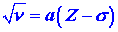

| 1. |
Estimate the wavelength of the photon which is emitted
when a 3p electron falls to a vacancy in the 1s orbital in a chlorine
ion. The energies of the 1s and 3p orbitals in chlorine are
-2.854 ´ 103
ev and -13.77 ev respectively. |
| 2. |
In his investigation of the X-ray spectra of the elements,
Moseley found that the frequencies of the lines of shortest wavelength
could be expressed as a function of the atomic number Z as |
|

|
| where a and s are constants.
Account for the general form of the relationship. What is the significance
of the factor s? |
| 3. |
(a) |
On the basis of your knowledge of the electronic structure of the elements
arrange the following substances in the order of their increasing ability
to act as oxidizing agents.
He+, Cl, P, Na, F-
|
|
(b) |
Arrange the following substances in the order of their increasing ability
to act as reducing agents.
Cs, Li, C, S, Cl
|
| 4. |
Rationalize the following observations on the basis of
the electronic structures of the halogen atoms and their ions. Iodide ions
can be oxidized to elemental iodine by molecular oxygen
4HI + O2 ®
2Li + 2H20
but the corresponding reaction does not occur with HCl
HCl + O2 ®
no reaction
|
| 5. |
Account for the fact that the second ionization potential
for oxygen is greater than that for fluorine. (I2
for 0 is 35.15 ev and I2 for F is
34.98 ev.) |
| 6. |
Which atom or ion in the following pairs has the highest
ionization potential?
(a) N, P
(b) Mg, Sr
(c) Ge, As
(d) Ar, K+ |
|
| 7. |
Of the following substances: F2,
F-, I2, I- |
| (a) |
Which is the best oxidizing agent? |
| (b) |
Which is the best reducing agent? |
| (c) |
Write one chemical equation for a reaction which will
illustrate your answers to parts (a) and (b). |